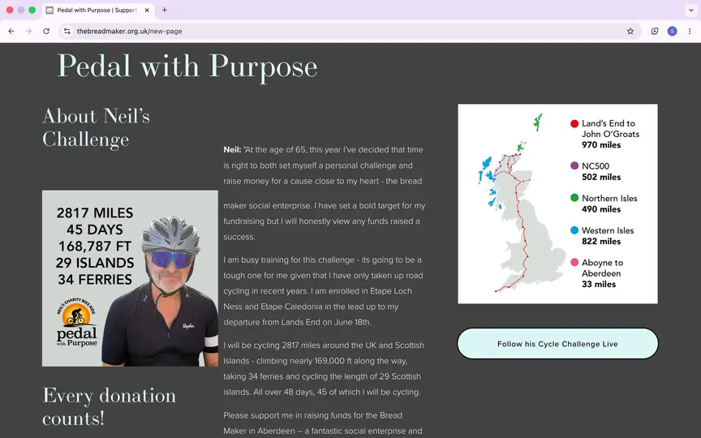
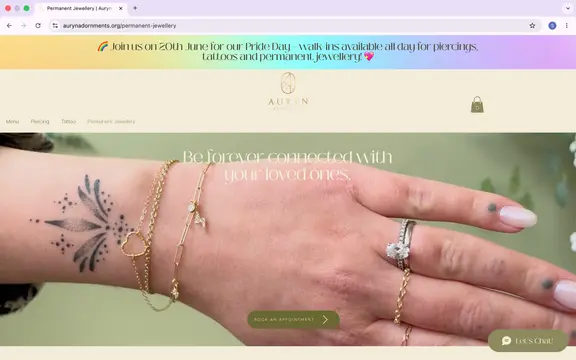
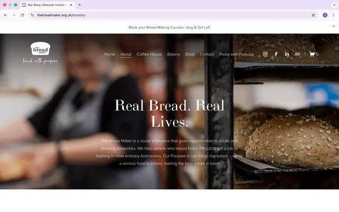
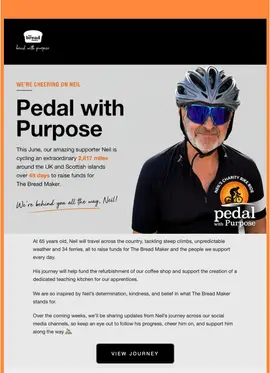
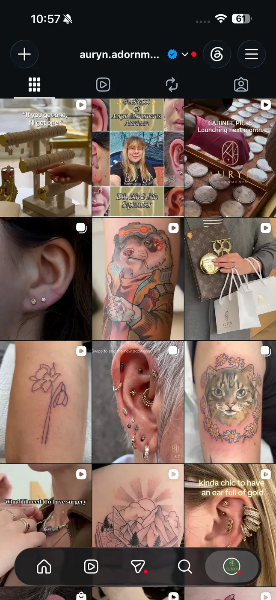
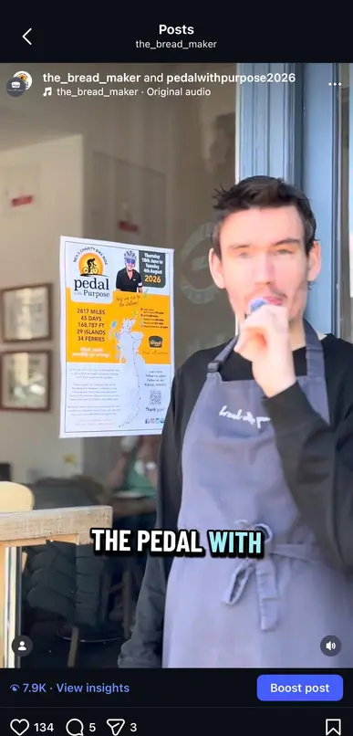
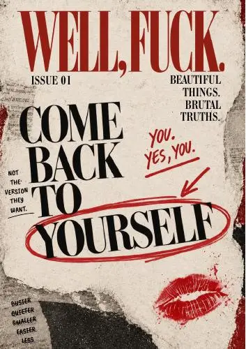

01Integrated campaign
Pedal with Purpose
A community fundraising story turned into a connected digital, email and print campaign.
Marketing manager · Aberdeen / UK
I turn briefs into joined-up campaigns across content, social, email, websites, print and real-world moments — then use the response to make the next decision sharper.
Choose what matters to you. Each case study shows the brief, what I owned and what changed — not just a gallery of nice posts.

A community fundraising story turned into a connected digital, email and print campaign.

A polished content and customer journey across website, social, email and in-studio moments.

Accessible, human communications that show the people, purpose and everyday energy behind the organisation.

A women’s editorial project built from one idea into a complete brand, magazine and digital launch.
I am comfortable shaping the brief and doing the work. The thinking and the execution stay connected.
Clarify the audience, desired action, constraints and what success should look like.
Shape the message, format, creative direction and channel plan around that job.
Create assets, coordinate people, manage approvals and keep the work moving.
Read the numbers and real responses, then turn them into a better next decision.
I work best where strategy, story and delivery meet.
I’m an MSc Digital Marketing graduate managing marketing across two Aberdeen organisations while building an independent editorial brand. My experience moves between community fundraising, premium retail, customer experience and client work — but the thread is the same: understand people, make the message clear, and deliver properly.
Premium retail content, website, launches, email, events and customer communications.
Campaigns, social, newsletters, web, print, press support and community storytelling.
Brand strategy, editorial direction, visual identity, magazine production and launch planning.
Client briefs, audience research, brand concepts, content plans and digital delivery.
A personal endurance challenge needed to become a story the wider community could understand, follow and support.
Turn Neil Marchant’s cycle challenge into a joined-up campaign that could build awareness, sustain momentum and make donating straightforward.

The campaign raised £21,240 and gave the organisation a clear story that worked across every audience touchpoint.
Premium retail marketingLuxury visual standards with the practical job of helping customers understand products, services and what to book next.
Create a more consistent digital brand and customer journey for a piercing, tattoo and fine-jewellery studio with multiple practitioners and offers.

A connected brand experience designed to feel premium without making the customer journey complicated.
Social impact communicationsThe work is meaningful because the people are. The communications needed to show that with dignity, warmth and clarity.
Make the organisation’s impact visible across everyday content, fundraising, events and external communications without flattening it into a generic charity story.

A recognisable, human content system that makes the organisation’s purpose easy to understand and its community easy to see.
Independent editorial brandA blunt, design-led women’s magazine about self-respect, identity and coming back to yourself.
Create a women’s platform that rejects generic self-care language and feels as considered as an independent fashion title.

One idea developed into a complete editorial product with a distinctive voice, coherent design system and clear route to market.